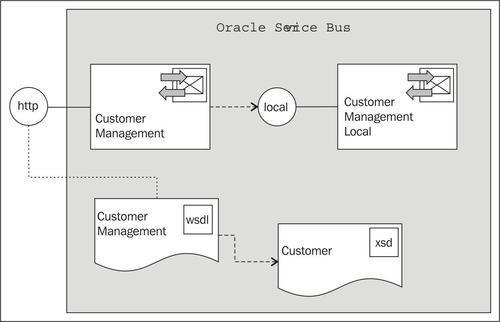
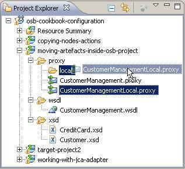

This recipe will show how to refactor the structure of an OSB project inside Eclipse OEPE. Simply use the drag-and-drop functionality to move an artifact from one place to another and Eclipse OEPE will make sure that all internal links are updated accordingly.
We will use a simple OSB project with one proxy service calling another proxy service:

Both proxy services implement the same WSDL interface. We will show how the proxy services can be refactored so that the private proxy service is located in its own folder. In the second step, we will also move the WSDL file into another folder.
Import the base OSB project for this recipe from here: \chapter-2\getting-ready\moving-artifacts-inside-osb-project.
First let's move the proxy service CustomerManagementLocal into a local folder located inside the proxy folder. In Eclipse OEPE, perform the following steps:

The moving of the artifact this way through Eclipse OEPE will make sure that all the invocation of the proxy service will be changed as well. If we check the Routing action inside the message flow of the CustomerManagement proxy service, we can see that the Service field reflects the new location of the CustomerManagementLocal proxy service being invoked.
Now let's see what happens if a WSDL file is moved to another folder. In Eclipse OEPE, perform the following steps:
customer-mgmt. customer-mgmt folder.The moving of the WSDL into another folder is also reflected in the General section of the two proxy services. The location of the WSDL Web Service now points to the location of the WSDL.
When it comes to refactoring operation inside an OSB project, the Eclipse OEPE behaves as expected. Drag-and-drop functionality on artifacts (files) is supported. It's important that these operations are done inside Eclipse OEPE and not directly on the filesystem. Only then is the refactoring applied on all other artifacts depending on the artifact being moved.